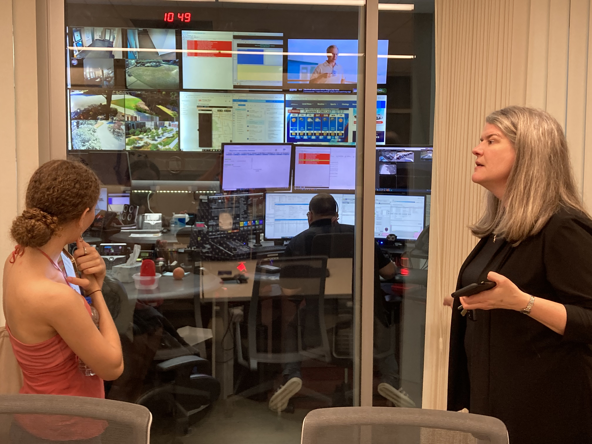

Sophia Melendez|july 25,2022
Today, in class, we were given many different scenarios by our speaker. The goal of the game was to convince our speaker of different things using her bias. We had to use our own research and try and either change her mind or to convince her more. Her bias in the first scenario was that she was five years old and had very religious parents that believed in every religion ever created. They also believed that the earth was flat and so because of this, my groups goal was to continue to have her believe that the earth was flat. We used pictures and small pieces of text to help convince her that the earth was flat. She had also mentioned that her favorite food was pizza, so we included many photos of pizza to back us up. The final scenario was her in university. She had been offered a scholarship in Australia for a good arts program but had a boyfriend in the US that she loved very much. My side’s goal was to convince her to take the opportunity to go to Australia. In the end, my group unfortunately lost, and she decided to stay in the US. This game was honestly really challenging but we all had so much fun playing it and it was honestly really funny to see some of the evidence.
_________________________________________________________________________________________________________________________
Sophia Melendez|July 22,2022
Cyber security is the protection of many internet systems like hardware, software, and data from cyberthreats. Today our speaker mentioned things like passwords. She talked about how they use a form of cryptography called cross hatching so that no one can really retrieve your password. She also talked about phishing and how people can easily steal your information by sending you emails pretending to be, family, friends, banks, or different kinds of websites that you enjoy. The goal is to get you to click a link so that they can easily steal your info. Hackers can also steal your information from the cloud. She also provided us with information to keep this from happening to us. There will be more threats that we have not anticipated in the future but as these threats begin to appear, we will become much quicker at solving them and quickly eliminating the threats and issues. As technology expands, the web will most likely become a lot safer.
_________________________________________________________________________________________________________________________
Sophia Melendez|July 21,2022
This video is a tutorial on how to add color to your text using CSS. It is super easy to understand and is super short so it doesn't take too much of your time. Hope you enjoy!
_________________________________________________________________________________________________________________________
Sophia Melendez|July 21,2022
Citizen science is when citizens of an area provide data for scientific research. This data is collected and analyzed. With citizen science, scientists create things such as online databases in order to collect data to answer questions. an example of this might be like the app Citizen. Citizen allows the general public to provide videos or photos/ live streams and information on any dangerous things happening in their vicinity. Citizen is also connected to 911 dispatcher calls and police scanners. Citizen science can be used to track endangered wildlife. My partners and I created a slide show about an app we thought of to track Manatee's in the water. Using this app, users would use drop locations to post when they see a manatee. Other users of the app would be able to see this and steer clear of these locations or help the manatee if any injuries are reported.
__________________________________________________________________________________________________________________________
Sophia Melendez|July 20,2022
Today, during class we walked around campus doing a scavenger hunt. My partner and I first visited the ischool advisor, Tess Schaufler. She was able to explain to us how her department (student services) no longer unless paper forms. Her department is mainly in charge of student life. She began explaining to us how she was organizing an orientation for the seniors. Everything must go through the computer as she does not even accept paper forms anymore. She explained to us that for the most part, she only works with graduate students and keeps track of what they need to graduate or holds (like money they might owe or parking tickets) on their accounts. Tess Schaufler also spoke to us about how she uses her computer to keep track of how many people are in each class or want certain classes and provide that information to the enrollment department. All in all, I learned plenty about the advisor’s job here at Syracuse and I was really fascinated.
My partner and I also visited Christine Weber at Campus Safety. Campus safely is in Sim Hall on campus. She explained to us how her department uses technology by showing us the call center. I mentioned how it looked like the movies. In the call center, they receive emergency calls and transfer them to emergency lines in order to send help over to people. They also have access to the 2,000+ cameras around campus which they watch all day. She described this job as super busy as they really need to be watching at all times for peoples safety. Below I will insert a photo of myself looking at the call center.

__________________________________________________________________________________________________________________________
Sophia Melendez|July 19,2022
Today in my IT girls course, we did an activity with teachable machine. My partner and I created a machine in order to be able to tell the emotion of a person as they entered the room. We included basic human emotions such as, anger, shock, happiness, sadness, thinking, and we also included a neutral emotion. We did this by hooking up a webcam to our computer and using the “Pose Project” button to create it. We stood far enough from the camera so that it would be able to see our entire bodies and we acted out what we thought these emotions might look like. Then we trained our machine and tested it out. We had split the emotions between ourselves so we both only did three. Upon testing out our machine, we realized it wouldn’t work unless we both included data of both of us doing each emotion. Finally, after including tons of data and retrying our idea a few times, we were able to get it to work on both of us and we presented it to our class. After this experience, I could see AI being used to help people see what their students might be feeling or doing in class while taking an exam. My classmates did a similar project where they acted as students writing, on their phone and spaced out. This would help many teachers to prevent cheating during exams or to keep focus during class.
Link to my teachable machine:
https://teachablemachine.withgoogle.com/models/9VJy_EBxl/__________________________________________________________________________________________________________________________
Sophia Melendez|July 19,2022
Mary Louise Prather was born in Washington D.C. in 1913(the exact date is unknown). She was active during World War II and is known most for her work in Cryptology at that time. She was also active during the early Cold War era. She first joined the SIS (Signal Intelligence Service) and was a civilian stenographer. This was in 1938 and qualified as an entry level position. Two years later in 1940, after working a variety of jobs in which she worked with many machines in the office, she would receive the position of Chief of the Stenographic section.
Mary Louise Prather was awarded with the Commendation for Meritorious civilian Service Award in 1946. She would continue to work in the offices of cryptography until she was promoted in 1960 to Chief of The Soviet Information Division. She would later go on to retire in 1969 working as the Division Chief of National Security Agency. She was also awarded with the Meritorious Civilian Service Award. She would pass away in 1996 at the age of 82-83.